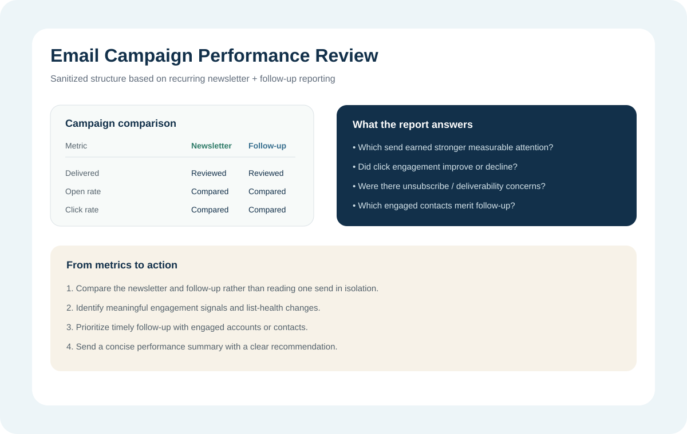

Delivery & opens
Review delivered volume and open-rate movement while accounting for the limits of email tracking.
I regularly review SEO and email performance, identify what changed, check the context behind the movement, and turn the findings into clear next actions.
My reporting work includes weekly email-stat reviews, keyword and ranking updates, visibility checks, account reviews, page and campaign observations, and concise summaries for decision making.

I compare newsletter and follow-up performance together and look for measurable engagement, list-health signals, and useful follow-up opportunities.
Review delivered volume and open-rate movement while accounting for the limits of email tracking.
Compare click activity to see whether attention translated into deeper interaction with the message.
Review unsubscribe and delivery signals to understand whether the sequence maintained audience interest.
Identify stronger engagement signals so follow-up can focus on the audiences showing more interest.
Connect the campaign topic, audience, timing, and sequence to the observed performance before writing a conclusion.
End with a concise recommendation: repeat, refine, follow up, test a new angle, or investigate an issue.
For weekly SEO updates, I review keyword positions, local and service intent, branded visibility, search volume, and movement before deciding whether the period is improving, stable, or needs investigation.
This keeps reporting useful without overstating what the data proves.